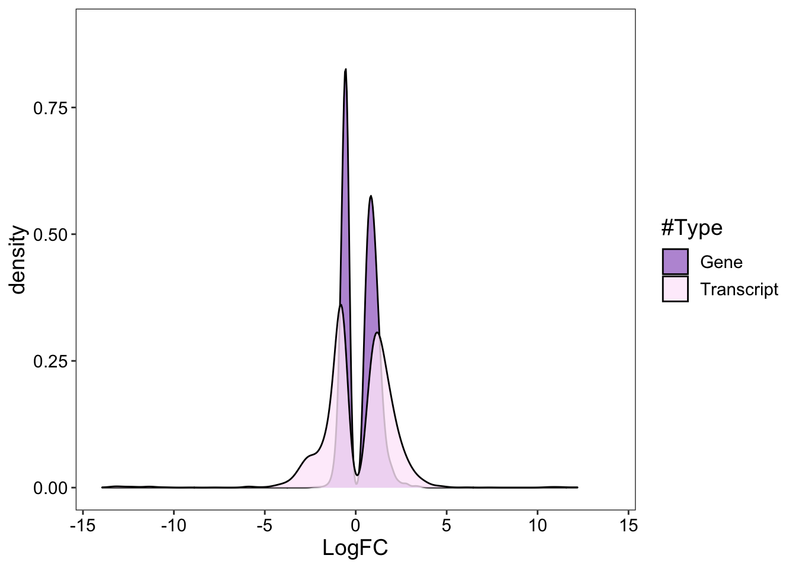
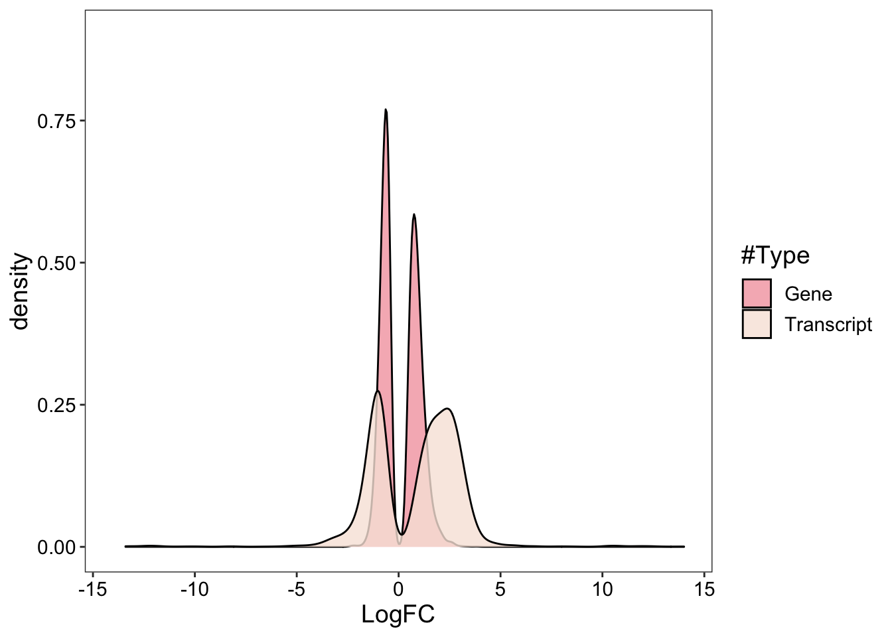
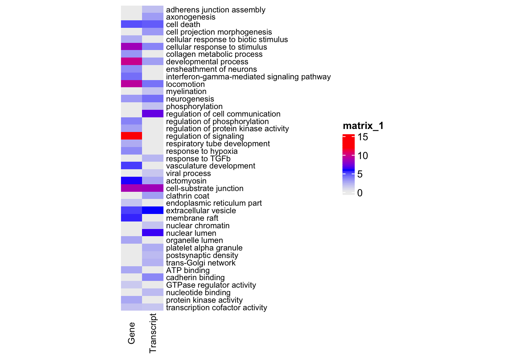
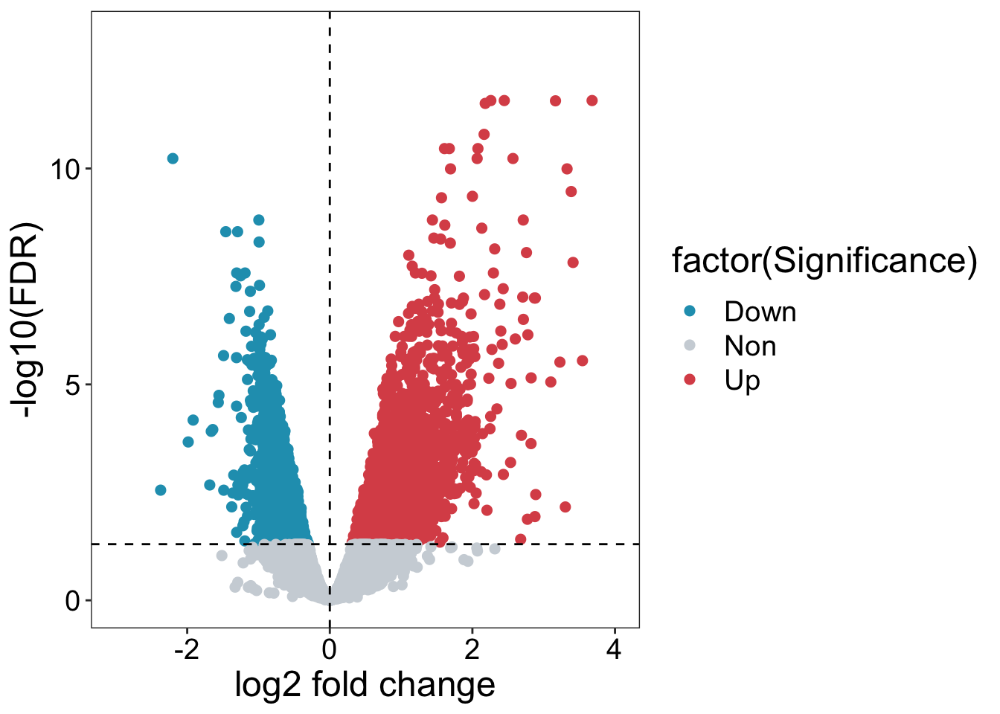
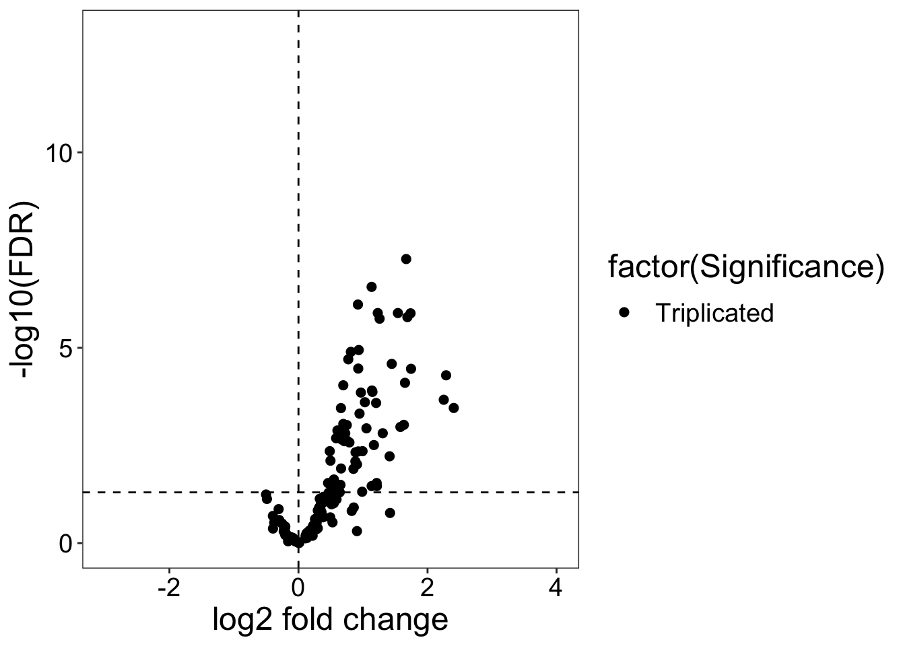
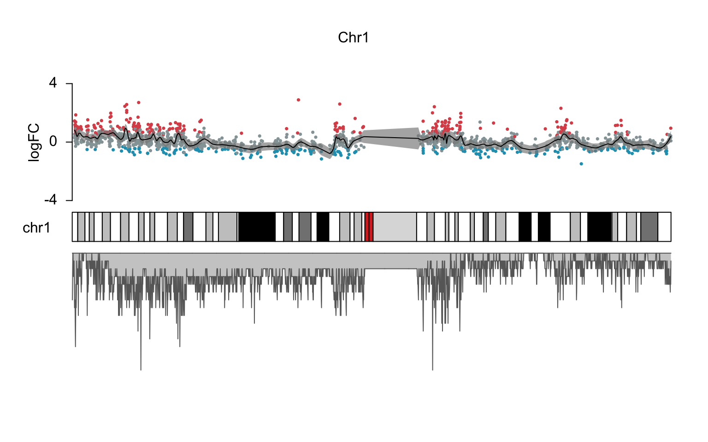
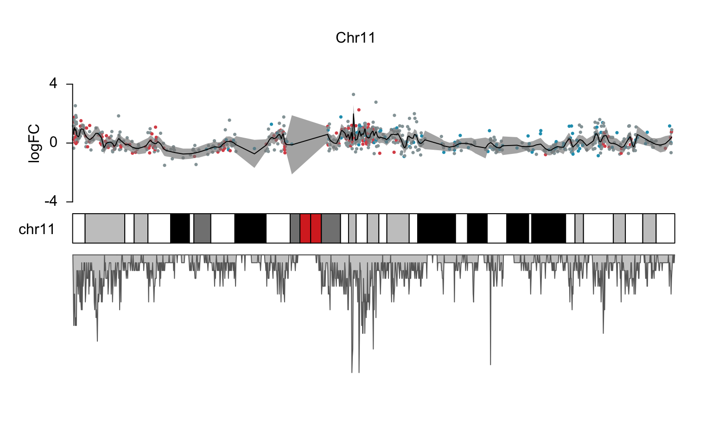
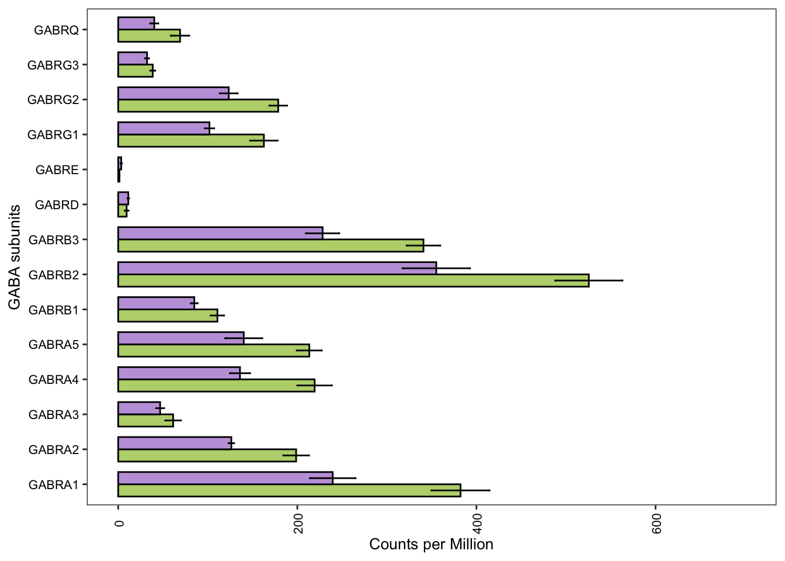

Last updated: 2022-09-27
Checks: 7 0
Knit directory: HumanMultiomics/
This reproducible R Markdown analysis was created with workflowr (version 1.7.0). The Checks tab describes the reproducibility checks that were applied when the results were created. The Past versions tab lists the development history.
Great! Since the R Markdown file has been committed to the Git repository, you know the exact version of the code that produced these results.
Great job! The global environment was empty. Objects defined in the global environment can affect the analysis in your R Markdown file in unknown ways. For reproduciblity it’s best to always run the code in an empty environment.
The command set.seed(20220715) was run prior to running
the code in the R Markdown file. Setting a seed ensures that any results
that rely on randomness, e.g. subsampling or permutations, are
reproducible.
Great job! Recording the operating system, R version, and package versions is critical for reproducibility.
Nice! There were no cached chunks for this analysis, so you can be confident that you successfully produced the results during this run.
Great job! Using relative paths to the files within your workflowr project makes it easier to run your code on other machines.
Great! You are using Git for version control. Tracking code development and connecting the code version to the results is critical for reproducibility.
The results in this page were generated with repository version 528e160. See the Past versions tab to see a history of the changes made to the R Markdown and HTML files.
Note that you need to be careful to ensure that all relevant files for
the analysis have been committed to Git prior to generating the results
(you can use wflow_publish or
wflow_git_commit). workflowr only checks the R Markdown
file, but you know if there are other scripts or data files that it
depends on. Below is the status of the Git repository when the results
were generated:
Ignored files:
Ignored: .DS_Store
Ignored: .Rhistory
Ignored: .Rproj.user/
Ignored: analysis/.DS_Store
Ignored: analysis/.Rhistory
Ignored: data/.DS_Store
Ignored: figure/.DS_Store
Untracked files:
Untracked: output/
Note that any generated files, e.g. HTML, png, CSS, etc., are not included in this status report because it is ok for generated content to have uncommitted changes.
These are the previous versions of the repository in which changes were
made to the R Markdown (analysis/Figure1.Rmd) and HTML
(docs/Figure1.html) files. If you’ve configured a remote
Git repository (see ?wflow_git_remote), click on the
hyperlinks in the table below to view the files as they were in that
past version.
| File | Version | Author | Date | Message |
|---|---|---|---|---|
| Rmd | 6f1f980 | mohit-rastogi | 2022-09-26 | first commit |
| html | 6f1f980 | mohit-rastogi | 2022-09-26 | first commit |
These commands were used to generate different panels of Figure 1.
Figure 1A is designed in Adobe Illustrator and Figure 1B, Supp. Figure 1D are prepared with the help of venny2.1 (https://bioinfogp.cnb.csic.es/tools/venny/)
First, we will load all the packages required to perform this analysis
library(ggplot2)
library(dplyr)
library(edgeR)
library(openxlsx)
library(ggrepel)
library(DBI)
library(org.Hs.eg.db)
library("pcaExplorer")
library(TxDb.Hsapiens.UCSC.hg38.knownGene)
library(rtracklayer)
library(ggbio)
library(clusterProfiler)
library(enrichplot)
library(ggridges)
library(karyoploteR)
library(tidyverse)
library(forcats)
library(pathview)
library(ComplexHeatmap)
library(circlize)
library(rsample)
library(magrittr)
library(superheat)diff_gene_transcript_hippo<- read.table(file= "data/diff_gene_transcript_hippo.txt", header=T, row.names=1)
head(diff_gene_transcript_hippo) LogFC Type
ENSG00000127507 1.6532658 Gene
ENSG00000148671 0.8430004 Gene
ENSG00000204172 1.0022032 Gene
ENSG00000197976 0.5414043 Gene
ENSG00000128394 1.0469862 Gene
ENSG00000160072 0.9828805 Genediff_gene_transcript_hippo_density_plot<- ggplot(diff_gene_transcript_hippo, aes(LogFC))+
geom_density(aes(fill=factor(Type)), alpha=0.8) +
scale_fill_manual(values = c("#AA7DCE","#FEEAFA")) +
xlim(-14,14)+
ylim(0,0.9)+
labs(x="LogFC",
fill="#Type")+theme_bw()+
theme(text=element_text(size=14),axis.text.x = element_text(color = "black"),axis.text.y = element_text(color="black"),
panel.grid.major = element_blank(), panel.grid.minor = element_blank(),
panel.background = element_blank())
diff_gene_transcript_hippo_density_plot
| Version | Author | Date |
|---|---|---|
| dd963a3 | mohit-rastogi | 2022-09-26 |
diff_gene_transcript_cortex<- read.table(file= "data/diff_gene_transcript_cortex.txt", header=T, row.names=1)
head(diff_gene_transcript_cortex) LogFC Type
ENSG00000128274 2.0452885 Gene
ENSG00000181409 0.9393429 Gene
ENSG00000165029 0.8550180 Gene
ENSG00000107331 0.9181746 Gene
ENSG00000064687 0.9366807 Gene
ENSG00000197150 0.8312631 Genediff_gene_transcript_cortex_density_plot<- ggplot(diff_gene_transcript_cortex, aes(LogFC))+
geom_density(aes(fill=factor(Type)), alpha=0.8) +
scale_fill_manual(values = c("#F4A5AE","#F7E5DB")) +
xlim(-14,14)+
ylim(0,0.9)+
labs(x="LogFC",
fill="#Type")+theme_bw()+
theme(text=element_text(size=14),axis.text.x = element_text(color = "black"),axis.text.y = element_text(color="black"),
panel.grid.major = element_blank(), panel.grid.minor = element_blank(),
panel.background = element_blank())
diff_gene_transcript_cortex_density_plot
| Version | Author | Date |
|---|---|---|
| dd963a3 | mohit-rastogi | 2022-09-26 |
We performed the cell type enrichment analysis using EWCE package in R using different set of gene lists such as upregulated genes in hippocampus etc. and the heatmap was generated using “superheat” package in R.
We are not showing the plotting scripts for this figure.
We will read the data for GO terms which has been already cleaned up by taking the terms for both gene and transcript expression profiles and preparing the table with -log10FDR values from DAVID analysis.
We will show a heatmap for GO terms for upregulated genes and transcripts from hippocampus only. The others are done similarly.
human_hippo_gene_transcript_DAVID_up<-read.xlsx("data/GO_terms_figure1E.xlsx",sheet=1)
row.names(human_hippo_gene_transcript_DAVID_up)<-human_hippo_gene_transcript_DAVID_up$Term
human_hippo_gene_transcript_DAVID_up_filt<-as.data.frame(human_hippo_gene_transcript_DAVID_up[,-c(1)])
f3 = colorRamp2(seq(min(human_hippo_gene_transcript_DAVID_up_filt), max(human_hippo_gene_transcript_DAVID_up_filt), length = 3), c("#EEEEEE","blue", "red"), space = "RGB")
Heatmap(human_hippo_gene_transcript_DAVID_up_filt, col = f3, cluster_rows = FALSE,cluster_columns = FALSE,
row_order = order(as.numeric(gsub("row", "", rownames(human_hippo_gene_transcript_DAVID_up_filt)))),
column_order = order(as.numeric(gsub("column", "", colnames(human_hippo_gene_transcript_DAVID_up_filt)))),
row_names_gp = gpar(fontsize = 8),column_names_gp = gpar(fontsize=9),
column_names_centered = TRUE,heatmap_width = unit(3, "in"))
| Version | Author | Date |
|---|---|---|
| dd963a3 | mohit-rastogi | 2022-09-26 |
The data for preparing this figure in the folder “data” on the github repository.
This figure is shown in the differential expression analysis for the hippocampus in Data analysis and results section.
non_chr21_hippo_gene<-read.table(file="data/non_chr21_hippo_gene.txt", header=T, row.names=1)
volcano_non_chr21_hippo_gene<- ggplot(non_chr21_hippo_gene, aes(x = logFC, y = -log10(FDR))) +
geom_point(aes(color = factor(Significance)), alpha=1, size=2.0) +
xlim(-3,4)+
ylim(0, 13)+
scale_color_manual(values = c("#219EBC","#CED4DA","#DB5256")) +
xlab("log2 fold change") + ylab("-log10(FDR)")+
theme_bw() +
theme(text=element_text(size=18),axis.text.x = element_text(color = "black"),axis.text.y = element_text(color="black"),
panel.grid.major = element_blank(), panel.grid.minor = element_blank(),
panel.background = element_blank())
volcano_non_chr21_hippo_gene+geom_hline(yintercept=1.30, linetype="dashed", color = "black")+
geom_vline(xintercept = 0,linetype="dashed",color="black")
| Version | Author | Date |
|---|---|---|
| dd963a3 | mohit-rastogi | 2022-09-26 |
chr21_hippo_gene<-read.table(file="data/chr21_hippo_gene.txt", header=T, row.names=1)
volcano_chr21_hippo_gene<- ggplot(chr21_hippo_gene, aes(x = logFC, y = -log10(FDR))) +
geom_point(aes(color = factor(Significance)), alpha=1, size=2.0) +
xlim(-3,4)+
ylim(0, 13)+
scale_color_manual(values = c("BLACK")) +
xlab("log2 fold change") + ylab("-log10(FDR)")+
theme_bw() +
theme(text=element_text(size=18),axis.text.x = element_text(color = "black"),axis.text.y = element_text(color="black"),
panel.grid.major = element_blank(), panel.grid.minor = element_blank(),
panel.background = element_blank())
volcano_chr21_hippo_gene+geom_hline(yintercept=1.30, linetype="dashed", color = "black")+
geom_vline(xintercept = 0,linetype="dashed",color="black")
| Version | Author | Date |
|---|---|---|
| dd963a3 | mohit-rastogi | 2022-09-26 |
results_hippo_RNA<- readRDS("output/results_hippo_RNA.rds")
sigGenes <- results_hippo_RNA
tx<-TxDb.Hsapiens.UCSC.hg38.knownGene
exo <- exonsBy(tx,"gene")
exoRanges <- unlist(range(exo))
sigRegions <- exoRanges[na.omit(match(sigGenes$ENTREZID, names(exoRanges)))]
mcols(sigRegions) <- sigGenes[match(names(sigRegions), sigGenes$ENTREZID),]
sigRegionsGRanges object with 14146 ranges and 12 metadata columns:
seqnames ranges strand | logFC logCPM
<Rle> <IRanges> <Rle> | <numeric> <numeric>
26155 chr1 944203-959309 - | 0.286287 5.123650
339451 chr1 960584-965719 + | 1.444466 1.134020
57801 chr1 998962-1000172 - | 0.540323 0.786063
9636 chr1 1001138-1014540 + | 0.339285 1.562178
375790 chr1 1020120-1056118 + | 1.428524 4.581598
... ... ... ... . ... ...
23181 chr21 46458891-46570015 + | 0.921378 6.25343
6285 chr21 46598604-46605208 - | 0.299546 7.87716
3275 chr21 46635595-46665124 + | 0.485232 6.94981
389831 chrUn_GL000195v1 42939-49164 - | -1.191513 2.15811
102724788 chr22 18912777-18936553 - | 0.734929 2.61639
LR PValue FDR ENSEMBL ENTREZID
<numeric> <numeric> <numeric> <character> <character>
26155 1.780455 1.82093e-01 0.294401021 ENSG00000188976 26155
339451 12.014082 5.28001e-04 0.003696271 ENSG00000187961 339451
57801 1.091323 2.96178e-01 0.423355905 ENSG00000188290 57801
9636 0.522737 4.69676e-01 0.589624513 ENSG00000187608 9636
375790 16.370628 5.20862e-05 0.000684321 ENSG00000188157 375790
... ... ... ... ... ...
23181 33.96882 5.60024e-09 7.80794e-07 ENSG00000160305 23181
6285 3.24890 7.14715e-02 1.45929e-01 ENSG00000160307 6285
3275 11.57174 6.69616e-04 4.42441e-03 ENSG00000160310 3275
389831 6.09842 1.35303e-02 4.21130e-02 ENSG00000276256 389831
102724788 1.28594 2.56797e-01 3.80327e-01 ENSG00000277196 102724788
SYMBOL GENENAME CHR UNIPROT
<character> <character> <character> <character>
26155 NOC2L NOC2 like nucleolar .. 1 Q9Y3T9
339451 KLHL17 kelch like family me.. 1 Q6TDP4
57801 HES4 hes family bHLH tran.. 1 E9PB28
9636 ISG15 ISG15 ubiquitin like.. 1 P05161
375790 AGRN agrin 1 O00468
... ... ... ... ...
23181 DIP2A disco interacting pr.. 21 Q14689
6285 S100B S100 calcium binding.. 21 A0A0S2Z4C5
3275 PRMT2 protein arginine met.. 21 P55345
389831 LOC389831 uncharacterized LOC3.. 14 <NA>
102724788 LOC102724788 proline dehydrogenas.. 22 <NA>
ALIAS
<character>
26155 NET15
339451 AF
57801 bHLHb42
9636 G1P2
375790 AGRIN
... ...
23181 C21orf106
6285 NEF
3275 HRMT1L1
389831 LOC389831
102724788 LOC102724788
-------
seqinfo: 595 sequences (1 circular) from hg38 genomesigRegions[order(sigRegions$LR,decreasing = TRUE)]GRanges object with 14146 ranges and 12 metadata columns:
seqnames ranges strand | logFC logCPM
<Rle> <IRanges> <Rle> | <numeric> <numeric>
64005 chr7 44962662-44979088 - | 3.67879 0.606683
7052 chr20 38127385-38166578 - | 2.25840 4.274056
3339 chr1 21822244-21937310 - | 2.44714 3.740847
12 chr14 94592058-94624646 + | 3.16526 0.988412
3691 chr17 75721328-75757818 + | 2.18007 5.528861
... ... ... ... . ... ...
27079 chr15 40569299-40574949 + | -0.000338077 2.074500
26290 chr12 4669741-4851003 + | 0.000251939 3.436495
196441 chr12 71609599-71667725 - | -0.000171008 6.947769
54623 chr19 39385629-39391154 - | 0.000149507 5.986378
285643 chr5 155013755-155018141 + | 0.000296206 0.172698
LR PValue FDR ENSEMBL ENTREZID
<numeric> <numeric> <numeric> <character> <character>
64005 66.0467 4.40354e-16 2.67493e-12 ENSG00000136286 64005
7052 65.9522 4.61983e-16 2.67493e-12 ENSG00000198959 7052
3339 65.5580 5.64291e-16 2.67493e-12 ENSG00000142798 3339
12 64.9642 7.62729e-16 2.71169e-12 ENSG00000196136 12
3691 64.2538 1.09383e-15 3.11108e-12 ENSG00000132470 3691
... ... ... ... ... ...
27079 1.33593e-06 0.999078 0.999353 ENSG00000166133 27079
26290 1.15559e-06 0.999142 0.999353 ENSG00000130035 26290
196441 9.56964e-07 0.999219 0.999360 ENSG00000133858 196441
54623 7.65266e-07 0.999302 0.999372 ENSG00000006712 54623
285643 4.61344e-07 0.999458 0.999458 ENSG00000226650 285643
SYMBOL GENENAME CHR UNIPROT ALIAS
<character> <character> <character> <character> <character>
64005 MYO1G myosin IG 7 B0I1T2 HA2
7052 TGM2 transglutaminase 2 20 P21980 G(h)
3339 HSPG2 heparan sulfate prot.. 1 P98160 HSPG
12 SERPINA3 serpin family A memb.. 14 A0A024R6P0 AACT
3691 ITGB4 integrin subunit bet.. 17 A0A024R8T0 CD104
... ... ... ... ... ...
27079 RPUSD2 RNA pseudouridine sy.. 15 Q8IZ73 C15orf19
26290 GALNT8 polypeptide N-acetyl.. 12 Q9NY28 GALNAC-T8
196441 ZFC3H1 zinc finger C3H1-typ.. 12 O60293 CCDC131
54623 PAF1 PAF1 homolog, Paf1/R.. 19 Q8N7H5 F23149_1
285643 KIF4B kinesin family membe.. 5 B4DYE2 KIF4B
-------
seqinfo: 595 sequences (1 circular) from hg38 genomefiltered.sigRegions <- sigRegions[!is.na(sigRegions$FDR)]
log.pval <- -log10(filtered.sigRegions$FDR)
mcols(filtered.sigRegions)$log.pval <- log.pval
filtered.sigRegionsGRanges object with 14146 ranges and 13 metadata columns:
seqnames ranges strand | logFC logCPM
<Rle> <IRanges> <Rle> | <numeric> <numeric>
26155 chr1 944203-959309 - | 0.286287 5.123650
339451 chr1 960584-965719 + | 1.444466 1.134020
57801 chr1 998962-1000172 - | 0.540323 0.786063
9636 chr1 1001138-1014540 + | 0.339285 1.562178
375790 chr1 1020120-1056118 + | 1.428524 4.581598
... ... ... ... . ... ...
23181 chr21 46458891-46570015 + | 0.921378 6.25343
6285 chr21 46598604-46605208 - | 0.299546 7.87716
3275 chr21 46635595-46665124 + | 0.485232 6.94981
389831 chrUn_GL000195v1 42939-49164 - | -1.191513 2.15811
102724788 chr22 18912777-18936553 - | 0.734929 2.61639
LR PValue FDR ENSEMBL ENTREZID
<numeric> <numeric> <numeric> <character> <character>
26155 1.780455 1.82093e-01 0.294401021 ENSG00000188976 26155
339451 12.014082 5.28001e-04 0.003696271 ENSG00000187961 339451
57801 1.091323 2.96178e-01 0.423355905 ENSG00000188290 57801
9636 0.522737 4.69676e-01 0.589624513 ENSG00000187608 9636
375790 16.370628 5.20862e-05 0.000684321 ENSG00000188157 375790
... ... ... ... ... ...
23181 33.96882 5.60024e-09 7.80794e-07 ENSG00000160305 23181
6285 3.24890 7.14715e-02 1.45929e-01 ENSG00000160307 6285
3275 11.57174 6.69616e-04 4.42441e-03 ENSG00000160310 3275
389831 6.09842 1.35303e-02 4.21130e-02 ENSG00000276256 389831
102724788 1.28594 2.56797e-01 3.80327e-01 ENSG00000277196 102724788
SYMBOL GENENAME CHR UNIPROT
<character> <character> <character> <character>
26155 NOC2L NOC2 like nucleolar .. 1 Q9Y3T9
339451 KLHL17 kelch like family me.. 1 Q6TDP4
57801 HES4 hes family bHLH tran.. 1 E9PB28
9636 ISG15 ISG15 ubiquitin like.. 1 P05161
375790 AGRN agrin 1 O00468
... ... ... ... ...
23181 DIP2A disco interacting pr.. 21 Q14689
6285 S100B S100 calcium binding.. 21 A0A0S2Z4C5
3275 PRMT2 protein arginine met.. 21 P55345
389831 LOC389831 uncharacterized LOC3.. 14 <NA>
102724788 LOC102724788 proline dehydrogenas.. 22 <NA>
ALIAS log.pval
<character> <numeric>
26155 NET15 0.531061
339451 AF 2.432236
57801 bHLHb42 0.373294
9636 G1P2 0.229424
375790 AGRIN 3.164740
... ... ...
23181 C21orf106 6.107464
6285 NEF 0.835858
3275 HRMT1L1 2.354144
389831 LOC389831 1.375584
102724788 LOC102724788 0.419842
-------
seqinfo: 595 sequences (1 circular) from hg38 genomerange(filtered.sigRegions$logFC)[1] -2.372755 3.678790fc.ymax <- ceiling(max(abs(range(filtered.sigRegions$logFC))))
fc.ymin <- -fc.ymax
col.over <- "#DB5256"
col.under <- "#219EBC"
col.non <- "#95A3A6"
#sign.col <- rep(col.over, length(filtered.sigRegions$FDR<0.05))
#sign.col[filtered.sigRegions$FDR>=0.05] <- col.under
sign.col <- rep(col.over, length(filtered.sigRegions$logFC>0.3 & filtered.sigRegions$FDR<0.05))
sign.col[filtered.sigRegions$FDR<0.05 & filtered.sigRegions$logFC<(-0.3)] <- col.under
sign.col[filtered.sigRegions$FDR>=0.05] <- col.non
pp <- getDefaultPlotParams(plot.type = 2)filtered.sigRegions_chr1<-subset(filtered.sigRegions,filtered.sigRegions$CHR=="1")
fit2 <- loess(filtered.sigRegions_chr1$logFC ~ start(filtered.sigRegions_chr1),span = 0.03)
tibbe_chr1<-tibble(logFC=filtered.sigRegions_chr1$logFC,FDR=filtered.sigRegions_chr1$FDR,ENSEMBL=filtered.sigRegions_chr1$ENSEMBL,SYMBOL=filtered.sigRegions_chr1$SYMBOL,start=start(filtered.sigRegions_chr1))
bootstrap_samples <- bootstraps(tibbe_chr1, times = 25)
summary(fit2)Call:
loess(formula = filtered.sigRegions_chr1$logFC ~ start(filtered.sigRegions_chr1),
span = 0.03)
Number of Observations: 1421
Equivalent Number of Parameters: 99.89
Residual Standard Error: 0.4993
Trace of smoother matrix: 109.96 (exact)
Control settings:
span : 0.03
degree : 2
family : gaussian
surface : interpolate cell = 0.2
normalize: TRUE
parametric: FALSE
drop.square: FALSE lowess_fit <- function(split){
lowess(analysis(split)$start,analysis(split)$logFC, f=3/100)
}
bootstrap_samples %>%
mutate(lowess_points = map(splits, lowess_fit)) %>%
select(id, lowess_points) %>%
mutate_if(is.list, map, as_tibble) %>%
unnest(cols = c(lowess_points))# A tibble: 35,525 × 3
id x y
<chr> <dbl> <dbl>
1 Bootstrap01 944203 0.789
2 Bootstrap01 960584 0.787
3 Bootstrap01 998962 0.785
4 Bootstrap01 1001138 0.785
5 Bootstrap01 1081818 0.779
6 Bootstrap01 1081818 0.779
7 Bootstrap01 1216909 0.769
8 Bootstrap01 1216909 0.769
9 Bootstrap01 1216909 0.769
10 Bootstrap01 1232237 0.768
# … with 35,515 more rowslowess_25 <- bootstrap_samples %>%
mutate(lowess_points = map(splits, lowess_fit)) %>%
select(id, lowess_points) %>%
mutate_if(is.list, map, as_tibble) %>%
unnest(cols = c(lowess_points)) %>%
distinct()kp1 <- plotKaryotype(genome = "hg38",chromosomes = "chr1",plot.type = 2, plot.params = pp) %>%
kpAddMainTitle(main = "Chr1") %>%
kpPoints(data=filtered.sigRegions_chr1, y=filtered.sigRegions_chr1$logFC, ymax=fc.ymax, ymin=fc.ymin, col=sign.col) %>%
kpPlotLoess(data=filtered.sigRegions_chr1, y=filtered.sigRegions_chr1$logFC, ymin=fc.ymin, ymax=fc.ymax,span = 0.03, conf.interval = (0.95),col="#000000") %>%
kpAxis(ymax=fc.ymax, ymin=fc.ymin) %>%
kpAddLabels(labels = "logFC", srt=90, pos=1, label.margin = 0.06, ymax=fc.ymax, ymin=fc.ymin) %>%
kpPlotDensity(data=exoRanges, window.size = 10e4, data.panel = 2)Warning in text.default(x = x, y = y, labels = labels, pos = pos, offset = 0, :
"ymax" is not a graphical parameterWarning in text.default(x = x, y = y, labels = labels, pos = pos, offset = 0, :
"ymin" is not a graphical parameter
| Version | Author | Date |
|---|---|---|
| dd963a3 | mohit-rastogi | 2022-09-26 |
filtered.sigRegions_chr11<-subset(filtered.sigRegions,filtered.sigRegions$CHR=="11")
fit2 <- loess(filtered.sigRegions_chr11$logFC ~ start(filtered.sigRegions_chr11),span = 0.03)
tibbe_chr11<-tibble(logFC=filtered.sigRegions_chr11$logFC,FDR=filtered.sigRegions_chr11$FDR,ENSEMBL=filtered.sigRegions_chr11$ENSEMBL,SYMBOL=filtered.sigRegions_chr11$SYMBOL,start=start(filtered.sigRegions_chr11))
bootstrap_samples <- bootstraps(tibbe_chr11, times = 25)
summary(fit2)Call:
loess(formula = filtered.sigRegions_chr11$logFC ~ start(filtered.sigRegions_chr11),
span = 0.03)
Number of Observations: 790
Equivalent Number of Parameters: 105.42
Residual Standard Error: 0.4993
Trace of smoother matrix: 115.7 (exact)
Control settings:
span : 0.03
degree : 2
family : gaussian
surface : interpolate cell = 0.2
normalize: TRUE
parametric: FALSE
drop.square: FALSE lowess_fit <- function(split){
lowess(analysis(split)$start,analysis(split)$logFC, f=3/100)
}
bootstrap_samples %>%
mutate(lowess_points = map(splits, lowess_fit)) %>%
select(id, lowess_points) %>%
mutate_if(is.list, map, as_tibble) %>%
unnest(cols = c(lowess_points))# A tibble: 19,750 × 3
id x y
<chr> <dbl> <dbl>
1 Bootstrap01 236966 1.00
2 Bootstrap01 289126 0.994
3 Bootstrap01 307631 0.990
4 Bootstrap01 308408 0.990
5 Bootstrap01 369499 0.978
6 Bootstrap01 369499 0.978
7 Bootstrap01 369499 0.978
8 Bootstrap01 448268 0.962
9 Bootstrap01 448268 0.962
10 Bootstrap01 494512 0.953
# … with 19,740 more rowslowess_25 <- bootstrap_samples %>%
mutate(lowess_points = map(splits, lowess_fit)) %>%
select(id, lowess_points) %>%
mutate_if(is.list, map, as_tibble) %>%
unnest(cols = c(lowess_points)) %>%
distinct()kp11 <- plotKaryotype(genome = "hg38",chromosomes = "chr11",plot.type = 2, plot.params = pp) %>%
kpAddMainTitle(main = "Chr11") %>%
kpPoints(data=filtered.sigRegions_chr11, y=filtered.sigRegions_chr11$logFC, ymax=fc.ymax, ymin=fc.ymin, col=sign.col) %>%
kpPlotLoess(data=filtered.sigRegions_chr11, y=filtered.sigRegions_chr11$logFC, ymin=fc.ymin, ymax=fc.ymax,span = 0.03, conf.interval = (0.95),col="#000000") %>%
kpAxis(ymax=fc.ymax, ymin=fc.ymin) %>%
kpAddLabels(labels = "logFC", srt=90, pos=1, label.margin = 0.06, ymax=fc.ymax, ymin=fc.ymin) %>%
kpPlotDensity(data=exoRanges, window.size = 10e4, data.panel = 2)Warning in text.default(x = x, y = y, labels = labels, pos = pos, offset = 0, :
"ymax" is not a graphical parameterWarning in text.default(x = x, y = y, labels = labels, pos = pos, offset = 0, :
"ymin" is not a graphical parameter
| Version | Author | Date |
|---|---|---|
| dd963a3 | mohit-rastogi | 2022-09-26 |
diff_gene_transcript_cortex<- read.table(file= "data/diff_gene_transcript_cortex.txt", header=T, row.names=1)
GABA_family_hippo<-read.xlsx("data/GABA_AMPA_family.xlsx",sheet=1)
GABA_01 <- ggplot(GABA_family_hippo, aes(CPM, Symbol,fill=Group))+
geom_bar(stat="identity",color="black", width = 0.7, position = "dodge") +
geom_errorbar(aes(xmin=CPM-sem, xmax=CPM+sem), width=.1,position=position_dodge(.7))+
scale_fill_manual(values = c("#B9D47A","#C2A3DC")) +
xlim(0,700)+
theme_bw()+
theme(legend.position="none",axis.text.x = element_text(angle=90, vjust=0.6,color ="black"),text=element_text(size=10),
axis.text.y = element_text(color="black"),panel.background = element_blank(),panel.grid.major = element_blank(),
panel.grid.minor = element_blank()) +
labs(x="Counts per Million",y="GABA subunits")
GABA_01
| Version | Author | Date |
|---|---|---|
| dd963a3 | mohit-rastogi | 2022-09-26 |
sessionInfo()R version 4.1.0 (2021-05-18)
Platform: x86_64-apple-darwin17.0 (64-bit)
Running under: macOS Catalina 10.15.7
Matrix products: default
BLAS: /Library/Frameworks/R.framework/Versions/4.1/Resources/lib/libRblas.dylib
LAPACK: /Library/Frameworks/R.framework/Versions/4.1/Resources/lib/libRlapack.dylib
locale:
[1] en_US.UTF-8/en_US.UTF-8/en_US.UTF-8/C/en_US.UTF-8/en_US.UTF-8
attached base packages:
[1] grid stats4 stats graphics grDevices utils datasets
[8] methods base
other attached packages:
[1] superheat_0.1.0
[2] magrittr_2.0.3
[3] rsample_1.1.0
[4] circlize_0.4.15
[5] ComplexHeatmap_2.8.0
[6] pathview_1.32.0
[7] forcats_0.5.2
[8] stringr_1.4.1
[9] purrr_0.3.4
[10] readr_2.1.2
[11] tidyr_1.2.1
[12] tibble_3.1.8
[13] tidyverse_1.3.2
[14] karyoploteR_1.18.0
[15] regioneR_1.24.0
[16] ggridges_0.5.3
[17] enrichplot_1.12.3
[18] clusterProfiler_4.0.5
[19] ggbio_1.40.0
[20] rtracklayer_1.52.1
[21] TxDb.Hsapiens.UCSC.hg38.knownGene_3.13.0
[22] GenomicFeatures_1.44.2
[23] GenomicRanges_1.44.0
[24] GenomeInfoDb_1.28.4
[25] pcaExplorer_2.18.0
[26] org.Hs.eg.db_3.13.0
[27] AnnotationDbi_1.54.1
[28] IRanges_2.28.0
[29] S4Vectors_0.32.3
[30] Biobase_2.54.0
[31] BiocGenerics_0.40.0
[32] DBI_1.1.3
[33] ggrepel_0.9.1
[34] openxlsx_4.2.5
[35] edgeR_3.34.1
[36] limma_3.50.1
[37] dplyr_1.0.10
[38] ggplot2_3.3.6
[39] workflowr_1.7.0
loaded via a namespace (and not attached):
[1] Hmisc_4.7-1 ps_1.7.1
[3] Rsamtools_2.8.0 foreach_1.5.2
[5] rprojroot_2.0.3 crayon_1.5.1
[7] MASS_7.3-58.1 nlme_3.1-159
[9] backports_1.4.1 reprex_2.0.2
[11] GOSemSim_2.18.1 rlang_1.0.5
[13] XVector_0.32.0 readxl_1.4.1
[15] SparseM_1.81 callr_3.7.2
[17] filelock_1.0.2 GOstats_2.58.0
[19] BiocParallel_1.28.3 rjson_0.2.21
[21] bit64_4.0.5 glue_1.6.2
[23] pheatmap_1.0.12 rngtools_1.5.2
[25] parallel_4.1.0 processx_3.7.0
[27] shinyAce_0.4.2 shinydashboard_0.7.2
[29] DOSE_3.18.3 haven_2.5.1
[31] tidyselect_1.1.2 SummarizedExperiment_1.22.0
[33] XML_3.99-0.10 GenomicAlignments_1.28.0
[35] xtable_1.8-4 evaluate_0.16
[37] cli_3.4.0 zlibbioc_1.40.0
[39] rstudioapi_0.14 furrr_0.3.1
[41] whisker_0.4 bslib_0.4.0
[43] rpart_4.1.16 fastmatch_1.1-3
[45] ensembldb_2.16.4 treeio_1.16.2
[47] shiny_1.7.2 xfun_0.33
[49] clue_0.3-61 cluster_2.1.4
[51] tidygraph_1.2.2 TSP_1.2-1
[53] KEGGREST_1.32.0 biovizBase_1.40.0
[55] threejs_0.3.3 ape_5.6-2
[57] listenv_0.8.0 dendextend_1.16.0
[59] future_1.28.0 Biostrings_2.60.2
[61] png_0.1-7 reshape_0.8.9
[63] withr_2.5.0 shinyBS_0.61.1
[65] bitops_1.0-7 ggforce_0.3.4
[67] RBGL_1.68.0 plyr_1.8.7
[69] cellranger_1.1.0 GSEABase_1.54.0
[71] AnnotationFilter_1.16.0 pillar_1.8.1
[73] GlobalOptions_0.1.2 cachem_1.0.6
[75] fs_1.5.2 GetoptLong_1.0.5
[77] vctrs_0.4.1 ellipsis_0.3.2
[79] generics_0.1.3 NMF_0.24.0
[81] tools_4.1.0 foreign_0.8-82
[83] munsell_0.5.0 tweenr_2.0.2
[85] fgsea_1.18.0 DelayedArray_0.18.0
[87] fastmap_1.1.0 compiler_4.1.0
[89] httpuv_1.6.6 pkgmaker_0.32.2
[91] plotly_4.10.0 GenomeInfoDbData_1.2.6
[93] gridExtra_2.3 lattice_0.20-45
[95] deldir_1.0-6 AnnotationForge_1.34.1
[97] utf8_1.2.2 later_1.3.0
[99] BiocFileCache_2.0.0 jsonlite_1.8.0
[101] GGally_2.1.2 scales_1.2.1
[103] graph_1.70.0 tidytree_0.4.0
[105] genefilter_1.74.1 lazyeval_0.2.2
[107] promises_1.2.0.1 doParallel_1.0.17
[109] latticeExtra_0.6-30 checkmate_2.1.0
[111] rmarkdown_2.16 cowplot_1.1.1
[113] webshot_0.5.3 dichromat_2.0-0.1
[115] downloader_0.4 BSgenome_1.60.0
[117] igraph_1.3.4 survival_3.4-0
[119] yaml_2.3.5 htmltools_0.5.3
[121] memoise_2.0.1 VariantAnnotation_1.38.0
[123] BiocIO_1.2.0 locfit_1.5-9.6
[125] seriation_1.3.6 graphlayouts_0.8.1
[127] viridisLite_0.4.1 digest_0.6.29
[129] assertthat_0.2.1 mime_0.12
[131] rappdirs_0.3.3 registry_0.5-1
[133] RSQLite_2.2.17 yulab.utils_0.0.5
[135] data.table_1.14.2 blob_1.2.3
[137] labeling_0.4.2 splines_4.1.0
[139] Formula_1.2-4 Cairo_1.6-0
[141] googledrive_2.0.0 OrganismDbi_1.34.0
[143] ProtGenerics_1.26.0 RCurl_1.98-1.8
[145] broom_1.0.1 hms_1.1.2
[147] modelr_0.1.9 colorspace_2.0-3
[149] base64enc_0.1-3 BiocManager_1.30.18
[151] shape_1.4.6 aplot_0.1.7
[153] nnet_7.3-17 sass_0.4.2
[155] Rcpp_1.0.9 fansi_1.0.3
[157] tzdb_0.3.0 parallelly_1.32.1
[159] R6_2.5.1 lifecycle_1.0.2
[161] zip_2.2.1 curl_4.3.2
[163] googlesheets4_1.0.1 jquerylib_0.1.4
[165] DO.db_2.9 Matrix_1.4-1
[167] qvalue_2.24.0 RColorBrewer_1.1-3
[169] iterators_1.0.14 topGO_2.44.0
[171] htmlwidgets_1.5.4 bamsignals_1.24.0
[173] polyclip_1.10-0 biomaRt_2.48.3
[175] crosstalk_1.2.0 shadowtext_0.1.2
[177] gridGraphics_0.5-1 rvest_1.0.3
[179] globals_0.16.1 htmlTable_2.4.1
[181] patchwork_1.1.2 KEGGgraph_1.52.0
[183] codetools_0.2-18 matrixStats_0.62.0
[185] lubridate_1.8.0 GO.db_3.13.0
[187] getPass_0.2-2 prettyunits_1.1.1
[189] dbplyr_2.2.1 gridBase_0.4-7
[191] gtable_0.3.1 git2r_0.30.1
[193] highr_0.9 ggfun_0.0.7
[195] httr_1.4.4 stringi_1.7.8
[197] progress_1.2.2 reshape2_1.4.4
[199] farver_2.1.1 heatmaply_1.3.0
[201] annotate_1.70.0 viridis_0.6.2
[203] Rgraphviz_2.36.0 ggtree_3.0.4
[205] DT_0.25.1 xml2_1.3.3
[207] bezier_1.1.2 restfulr_0.0.15
[209] interp_1.1-3 geneplotter_1.70.0
[211] ggplotify_0.1.0 Category_2.58.0
[213] DESeq2_1.32.0 bit_4.0.4
[215] scatterpie_0.1.8 jpeg_0.1-9
[217] MatrixGenerics_1.4.3 ggraph_2.0.6
[219] pkgconfig_2.0.3 gargle_1.2.1
[221] knitr_1.40